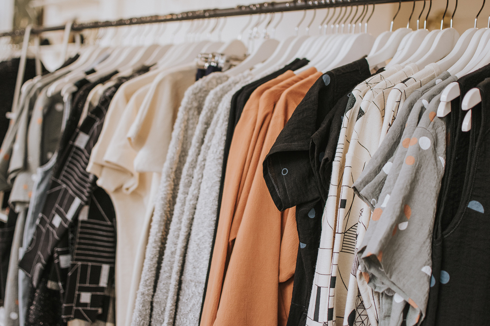

La lecture à petit prix
Je trippe vraiment sur les livres! Je trouve que c’est une façon saine de se détendre et de s’évader pour quelques instants!
Et les livres, chez nous, c’est une histoire de famille! Depuis toujours, ma mère nous offre un livre à notre anniversaire et à Noël. Mon chum est aussi un grand lecteur et on est en train de transmettre notre amour des livres à nos filles!
Mais acheter des livres neufs, ça peut parfois être difficile pour le budget (et pas génial pour l’environnement), surtout que mes filles dévorent les livres, littéralement...
Pour y remédier
On peut bien sur attendre les soldes des librairies mais il existe plusieurs boutiques de livres usagés qui nous permettent de se procurer des livres à petits prix et il y a souvent une section « livres » dans les friperies et les bazars. L’été, on peut en trouver dans les marchés aux puces et les ventes de garage!
On peut aussi retrouver dans certaines villes des boîtes aux coins des rues contenant des livres gratuits. Elles fonctionnent souvent sous le principe du « je prends un sou, je donne un sou »! On y fait souvent de belles découvertes!
Les bibliothèques publiques sont mes grandes favorites! L’abonnement y est gratuit, en plus des livres et des jeux qu’on peut y trouver, elles offrent souvent un catalogue d’activités pour tous les âges et elles ont souvent des expositions vraiment intéressantes! La dernière fois, il y avait des cabanes et ma plus grande a trippé à les explorer!

Prix citron: l’industrie textile, la 2e plus grande polluante au monde

Personne ne peut/veut se promener tout nu dans la rue (surtout pas en hiver au Québec…), se vêtir est primordial. Mais l’industrie du textile a été reconnue comme la 2e plus grande Pollueuse, après le pétrole… Aouch.
Le problème
La production de textile utilise plusieurs produits chimiques qui sont ensuite déversé dans les rivières, surtout en Chine. Ceux identifiés dans cette région peuvent être particulièrement dangereux (même à très faible dose) et restent dans l’environnement et s’intègrent aux organismes des animaux et à la chaîne alimentaire. Comme si ce n’était pas assez moche déjà, ils peuvent être transportés dans nos océans, rendant le problème mondial.
Produire des fibres textiles, naturelles (on pointe le coton du doigt) ou synthétiques, impose un énorme stress à notre planète. Effectivement, ça requiert énormément d’eau! Par exemple, un t-shirt requiert en moyenne 2 500 litres d’eau et un jeans 8 000 litres! Et il faut aussi prendre en considération l’épuisement des sols.
Il y a aussi le phénomène fast-fashion, vous aurez compris, c’est le fait de renouveler sans cesse sa garde-robe, à bas prix, avec des vêtements de pauvre qualité. Pour les compagnies de vêtements, le renouvellement constant de leurs produits, ça représente beaucoup de ventes, donc pas vraiment de raison de nous dissuader d’être au dernier cri. .. Et c’est difficile de recycler un vêtement cheap, conçu pour tougher quelques semaines seulement. Bref, refaire sa garde-robe à chaque saison, ça fait mal au porte-feuille à l’année longue et le gaspillage du textile ne rend service à personne. Vaut mieux avoir des classiques dans sa garde-robe et agrémenté de quelques morceaux fashion au travers. Et pour les enfants, rien de mieux que les vêtements évolutifs.
Et on ne parlera pas des conditions de travail et de la main-d’oeuvre utilisée dans la plupart des pays producteurs. Ni du transport pour les vêtements… Plus il vient de loin, plus son impact sur l’environnement est grand…
La solution
- Recycler ses vêtements (transformer un jeans troué en short, une robe tâchée en jupe ou en chandail, faire des guenilles, des sacs & vive pinterest pour toutes autres idées de transformation).
- Faire don de nos vêtements à des organismes privés ou des friperies qui peuvent soit les revendre soit les transformer en rembourrure.
- Choisir des vêtements classiques de qualité pour leur assurer la plus longue vie possible!
- Changer notre état d’esprit en privilégiant le cost-per-wear (coût par utilisation), qui permet une économie à long terme.
- Magasiner usagé grâce aux friperies (en plus ça encourage local!).
- Choisir des vêtements faits avec des matières certifiées biologiques ou privilégier certains types de textile comme le chanvre ou la laine.
- Encourager local, de plus en plus d’entreprise se tourne vers des matières biologiques ou faites au Canada en totalité ou en partie!
- Faire des échanges de vêtements entre amies!
J’espère que quelques unes de ses solutions sauront s’intégrer à votre mode de vie!
Sources pour le billet du blogue: Radio-Canada, Greenpeace, Bric à Bacs